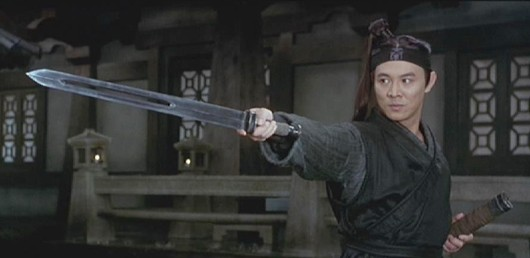

Jet Li Lian Jie urodził się w Pekinie 26.04.1953 roku. Został pięciokrotnie mistrzem Chin w
wushu.Trenował pod okiem mistrza Wu Bina, który kilkanaście
lat później szkolił Donnie Yena. Pod
koniec
lat 70-tych Li został mianowany trenerem reprezentacji Chin w wushu. Zagrał w ponad 40-stu filmach
zazwyczaj występując
w roli głównej. Najbardziej znane filmy w których brał udział to: "Klasztor Shaolin", saga "Pewnego
razu
w Chinach", Hero", Człowiek pies" czy "Nieustraszony". Dwukrotnie żonaty, obecnie z
Niną Li Chi
♥ (Miss Azji z 1986 roku).fingerprint

Niestety od kilku lat Jet Li zmaga się z poważną chorobą jaką jest nadczynność tarczycy. Z tego
powodu
aktorstwo odsunął na dalszy plan i coraz to rzadziej możemy go oglądać na ekranie. Li musi na siebie
uważać, bo większy wysiłek fizyczny może doprowadzić do kołatania serca, a w skrajnym przypadku do
śmierci.Nieco więcej o jego stanie zdrowia znajdziecie pod tym linkiem
Jet mimo choroby stara się być obecny w życiu
społecznym. Niedawno otworzył szkołę Tai Chi: sports_martial_arts
Oto tłumaczenie tekstu spod filmiku:
Chiński mistrz sztuk walki i aktor kung-fu, Jet Li, 1 marca otworzył ośrodek Tai-Chi w Pekinie.
Podczas ceremonii otwarcia, Jet Li powiedział, że będzie promował chińskie sztuki walki nie tylko
poprzez filmy.
Wraz z Jetem Li w ośrodku był przewodniczący Alibaba Group Man Yun, byli pasjonaci Tai-Chi i fani
Jeta
Li.
"Jako ambasador (przedstawiciel?) zarówno Chińskiego Związku Wushu oraz Światowej Federacji Wushu,
mam
wiele pomysłów jak promować chińską kulturę na świecie za pomocą sygnałów i symboli. Skoro panda
może
promować chińskie sztuki walki, to my także możemy mieć wiele pomysłów i sposobów na promowanie
kung-fu.
Zobaczycie mnóstwo zrealizowanych pomysłów już w tym roku." powiedział Jet Li podczas
ceremonii.
Przez rolę w filmie "Mistrz Tai-Chi", fani spodziewali się, że Jet Li ponownie zagra w nadchodzących
produkcjach filmowych związanych z Tai-Chi. Tai-Chi jest chińskim sposobem myślenia, filozofią
yin-yang
wkomponowaną w różne sztuki walki, takie jak boks Tai-Chi czy szermierka Tai-Chi.
"Doceniam to, że fani chcą żebym nagrał coś podobnego do "Mistrza Tai-Chi", ale uważam, że
powinienem
postąpić inaczej. Myślę, że moim głównym zadaniem w tym momencie jest zbudowanie pewnych podstaw i
stworzenie realnej szansy młodym" powiedział Jet Li.
Niemniej jednak, popularny aktor kung-fu nie zawiódł swoich fanów podczas ceremonii. Poprosił ich by
oczekiwali jego filmu 3D "The Legend of Deification", który będzie miał premierę tego lata.
Za udostępnienie tłumaczenia i informacji na temat stanu zdrowia Jeta składam podziękowania
dla
użytkownika filmwebu o nicku Dentarg.